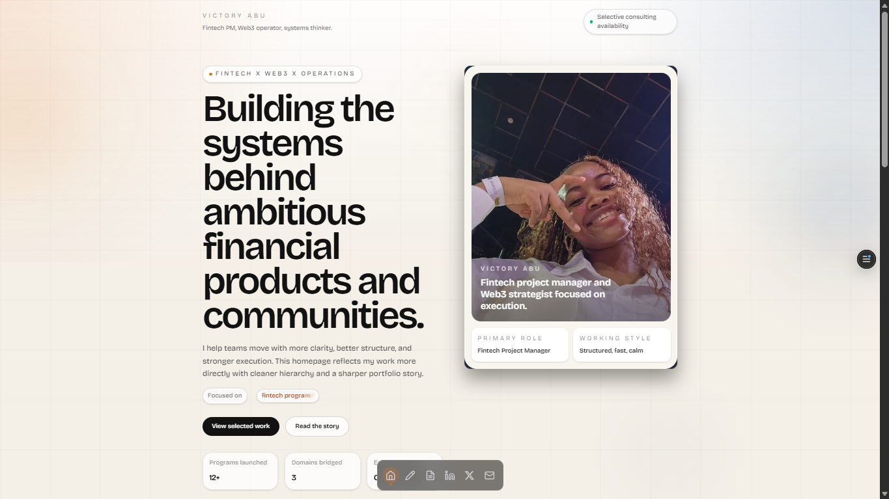
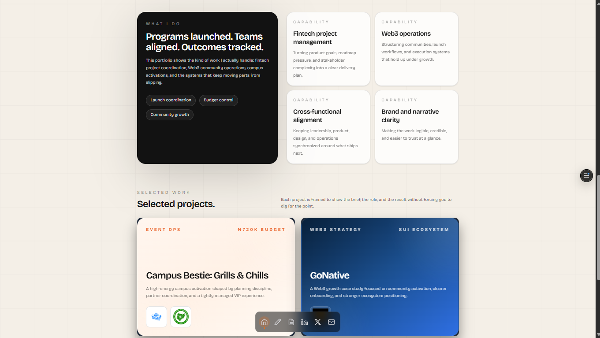
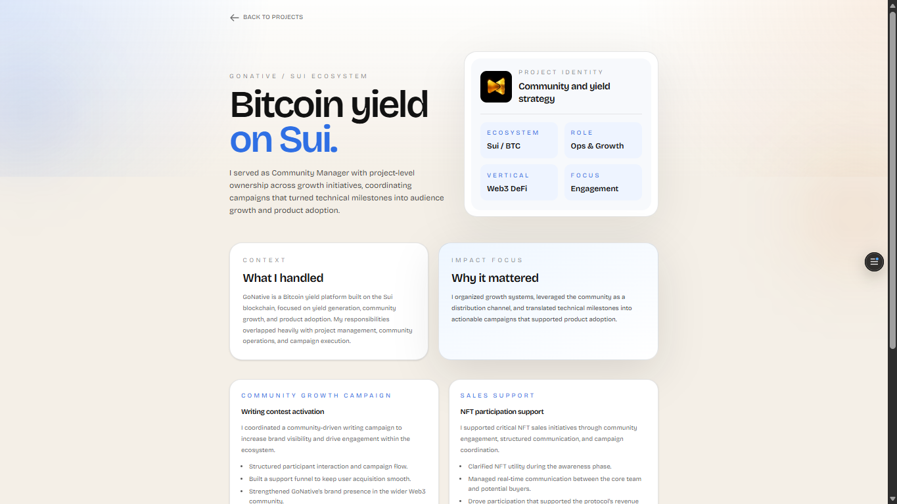

Vandah
A personal portfolio for a fintech project manager and Web3 strategist—proof of work, capabilities and selected projects arranged to communicate calm, precise execution.



Context
A consultant’s site has one job: make the work easy to trust in under a minute. The client had coordinated programs across fintech and Web3—the site needed to make that record legible, not buried.
What I built
A personal portfolio: a headline that frames the positioning, proof-of-work partner logos, capabilities across fintech PM and Web3 operations, selected projects framed as brief / role / result, and a clean “let’s work together” close. Next.js keeps it fast, and the hierarchy stays calm and scannable.
Why this approach
Consulting buyers decide on trust quickly. The design leads with outcomes and working style, and keeps every route to contact a single tap away.
Role & scope
Frontend build for a consultant’s personal site—structure, narrative framing and the interactions that make the work credible.
Result
A site that turns programs and a calm, precise working style into something a client can believe in before the first call.